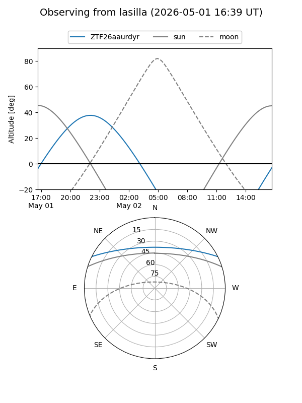
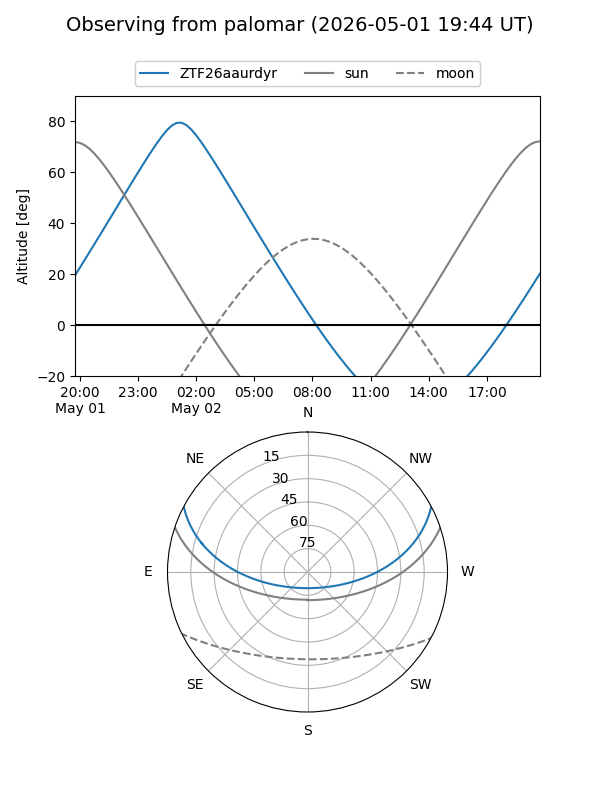

ZTF26aaurdyr
Target ZTF26aaurdyr at 2026-05-02 04:38
Aliases and brokers:
FINK: link
Lasair: link
ALeRCE: link
alt names
ZTF26aaurdyr (ztf,fink_ztf)
Coordinates:
equatorial (ra, dec) = 119.7078,+23.03678
equatorial (HMS+DMS) = 07:58:49.88,+23:02:12.42
galactic (l, b) = (198.5008,+24.57094)
Flags:
Photometry:
last ztfg=19.58
1 ztfg detections
Lightcurve
Visibility


Additional plots